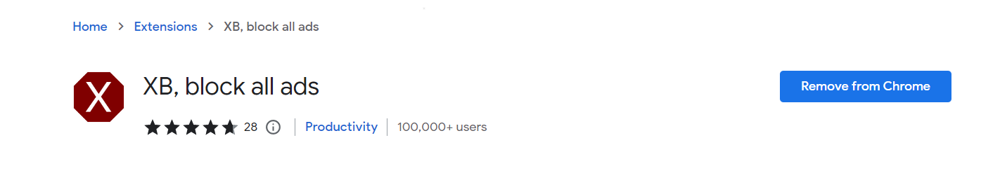
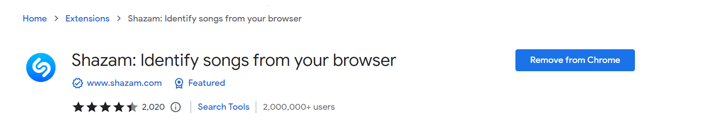
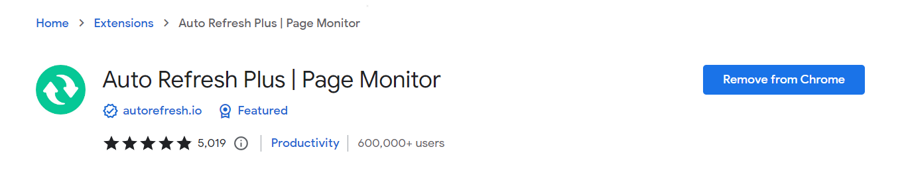
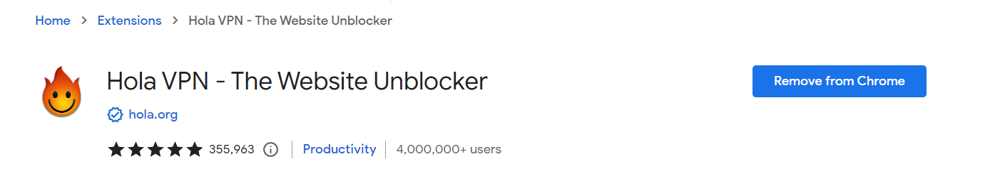
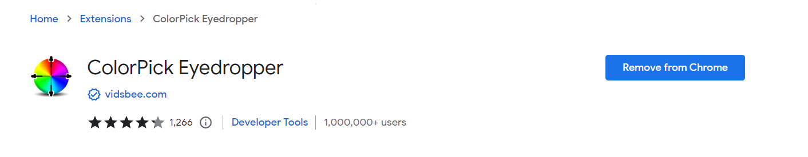
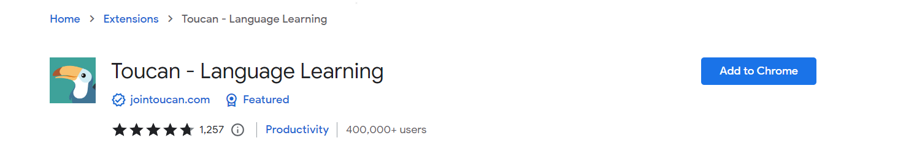

The Best Google Chrome Extensions
Google Chrome Extensions are the most powerful productivity tools on earth. They have the ability to make or break your chrome experience so here are some of the best I have found. These are listed in no particular order. Use them properly and efficiently.
Last Update: November 27, 2022
- XB, block all ads

Watching two or sometimes even three ads on Youtube before actually getting the quality you clicked for is the main reson extensions like these were created. There is a reason this is at the top of the list. Ever since downloading this extensions I have forgotten what ads on youtube or any other site for that matter looks like. For the sports fans who utilize totalsportek, for the youtube fans who hate watching upwards of 20 ads per video, for 123 movies fans who have 100 ads popping up on every click; this is the extension for you friends. It is simple and easy to integrate onto your browser, doesn't give you annoying pop ups, you can disable it for specific website for specific reasons. Provides analytics for how much work its doing for you in the background. Download this extension and you will have no pop ups, no redirections and no Jamaican women near you wanting to chat, all for $0. Pretty sweet deal if you ask me. I am sure there is no doubt in anyone's mind as to why this google chrome extension is at #1.
- Shazam

Have you ever been watching a netflix show, an NBA game or a movie trailer and was totally captivated by the music. You loved the track so much that you hopped onto youtube to find it only to realize that typing in the lyrics is not doing you justice. Well here comes this extension to the rescue. Never again will you not be able to broaden you music horizon. This extension has saved me plenty of time, failed attempts and embarrasing google searches. All you have to do is play the music hit the extension button and it recovers what ever music is playing on the page in a flash. Even Soundcloud music, yes, so for all you souncloud rappers and lovers this google chrome extension will keep you in business.
- Auto Refresh Plus | Page Monitor

Doing online tests are extremely stressful, but you know what else is even more stressful waiting for the grades to come out. The teacher said the grades will be out at 12 noon but you don't want to keep refreshing the page yourself? This is google chrome extension is waving "Hello". This extension will refresh your page at no cost and with no needed effort from you.
- Hola VPN - The Website Unblocker

Do you live in the caribbean? Are you aware that American and Caribbean netflix shows a different variety of shows. Well you know now. Hola VPN is partially free VPN that allows the suspicious among us to mask our locations and thus feel free and safe to browse the internet.
- ColorPick Eyedropper

Scrolling on pinterest and seeing a color you really like and not being able to identify the name or hex number for it must be absolutely awful. Thankfully, all who have this extension downloaded do not live in that world. Download this google chrome extension and watch your life become colorful.
- Toucan

Learn a new langauge with this extension and broaden your horizons. Replacing random words with the equivalent in the language you desire to learn. You will most definelty learn a thing or two through this extension. DuoLingo is great but Toucan play that game.